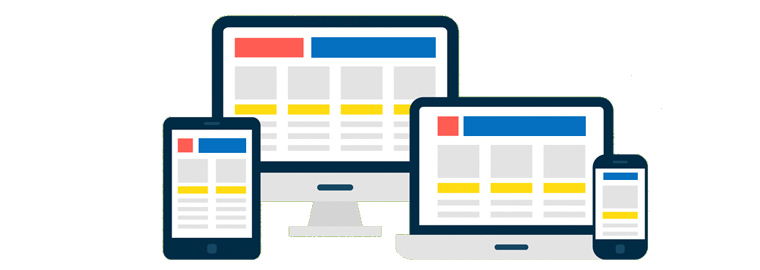

Спочатку веб-сторінки були з фіксованою версткою. Якщо контейнер був шириною 1200 пікселів - він так і залишався 1200 пікселів, на якому б екрані його не відкривали - великому або маленькому. В сучасній різноманітності мобільних пристроїв такий підхід застарів.
В сучасному Інтернеті використовуються нові підходи для створення веб-сайтів. Вони поєднують в собі елементи «гумової» верстки і нові, сучасні прийоми, як-от адаптивність (adaptive) і респонсивність (responsive). Техніки «адаптивної» і «респонсивної» верстки відрізняються тим, яким чином задається ширина контейнера і вкладених в нього елементів.

Респонсивна (responsive) веб-сторінка - має кілька варіантів відображення, переходи між ними плавні, елементи і контейнер тягнуться як гумові. При зміні розміру в'юпорту блоки плавно стискаються або розтягуються, а коли настає точка перелому (breakpoint) - змінюють своє розташування таким чином, щоб оптимально зайняти увесь вільний простір за горизонталлю.
Адаптивна (adaptive) веб-сторінка - має кілька варіантів відображення, і, на відміну від респонсивної сторінки - буквально. Дизайн змінюється ривками у жорстко заданих точках перелому, і не тягнеться між ними.
Увага:
Під час написання медіа-запитів потрібно орієнтуватися на точки перелому
дизайну, тобто такі значення ширини в'юпорту, за яких дизайн суттєво
змінюється. Їх можна визначити за макетом, створеним дизайнером.
Перейдіть за посиланням в повну версію прикладу і змінюйте ширину області з результатом, так буде видно різницю між респонсивним і адаптивним контейнерами. Колір контейнерів змінюється в кожній з довільно обраних точок перелому 600, 900 і 1140 пікселів.
See the Pen lesson-15-responsive-and-adaptive by goit-academy (@goit-academy) on CodePen.
Обом контейнерам задається властивість min-width - ширина в'юпорту, нижче якої дизайн не підтримується. У користувача з вужчим екраном з'явиться горизонтальна смуга прокручування.
.container {
min-width: 320px;
}
Респонсивному контейнеру один раз задається властивість max-width в базових стилях, щоб він довільно тягнувся, але максимально був не ширшим за вказане значення.
.container.responsive {
max-width: 1140px;
}
Адаптивному контейнеру задається початкове значення максимальної ширини, після чого, воно перевизначається у кожній точці перелому.
/* Задаємо базову ширину адаптивного контейнера */
.container.adaptive {
max-width: 320px;
}
@media screen and (min-width: 600px) {
.container.adaptive {
max-width: 600px;
}
}
@media screen and (min-width: 900px) {
.container.adaptive {
max-width: 900px;
}
}
@media screen and (min-width: 1140px) {
.container.adaptive {
max-width: 1140px;
}
}
Який підхід використовувати? Все залежить від дизайну, типу веб-сайту і фінансових можливостей замовника. Для більшості веб-сайтів малого та середнього бізнесу достатньо адаптивної версії. Респонсивна верстка дорожча в дизайні, проектуванні і розробці, оскільки її складніше і довше робити, але вона незамінна в інтерфейсах сучасних веб-застосунків. Іноді бізнес-завдання краще виконає окрема мобільна версія або взагалі нативний застосунок, замість веб-сайту.